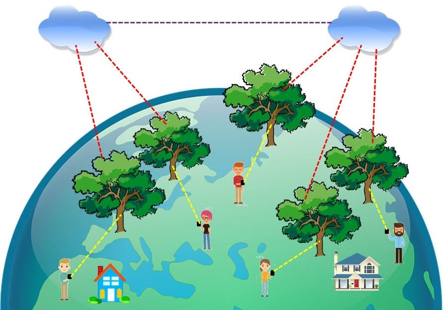

Feel like a tree
Connect people to a number of trees then forest nature on earth then we care where we are and who we really are, A part of earth.

Connect people to a number of trees then forest nature on earth. In this way we care where we are and who we really are. Through iot sensors (eventually a button sized device such as Genuino 101 and its extension) attached on the trees, the Vibration(movement) and Sound may including Temperature and Humidity could be watched and feel globally based on ICT and smart phone apps and vibrator. If we concern, then the disaster from nature would much less then we don't know how tree feel. One man one tree start right now.
Team: Big Thinker